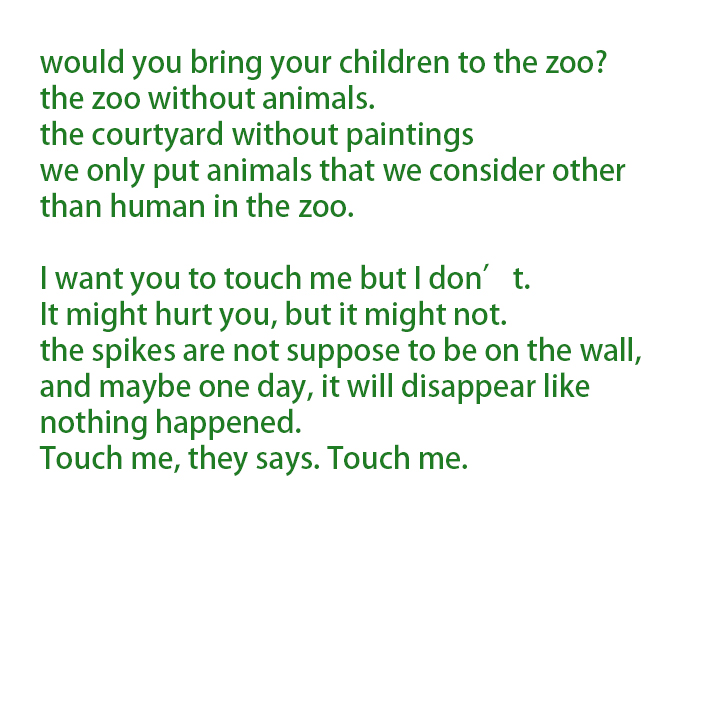
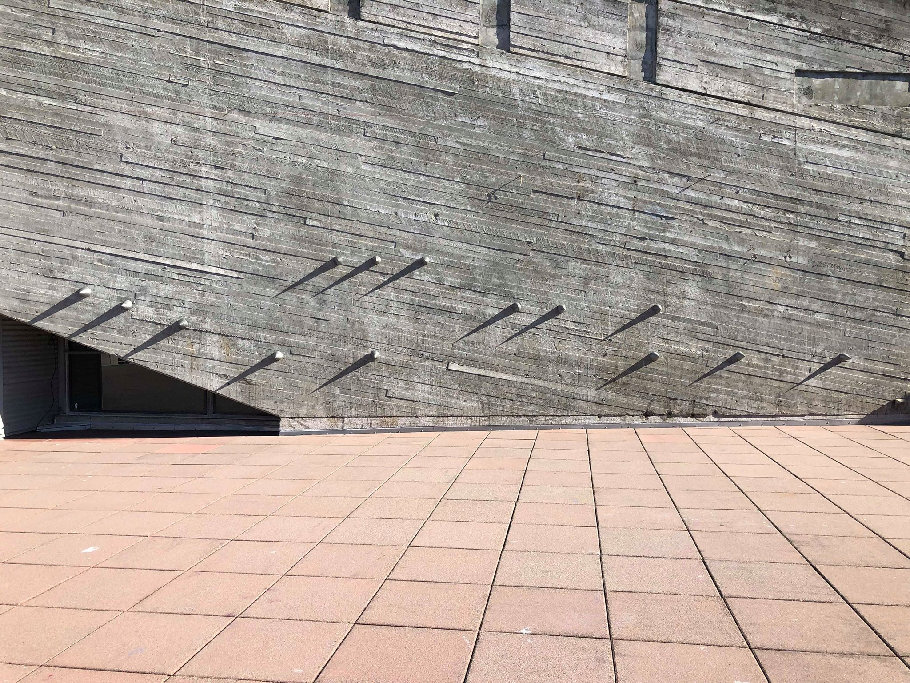
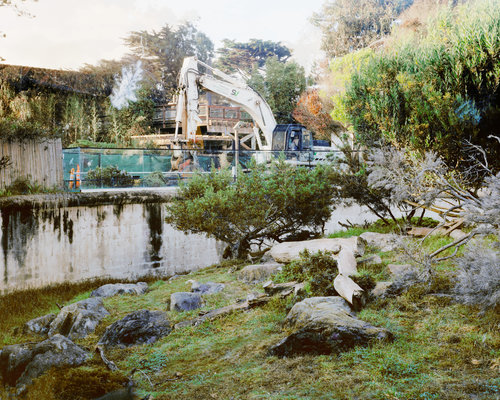

Occupy implies that something is in a location where it is not intended to be, and is continually taking place in a period of time.
Are you a sheep, or you are the sheep?
Rules rules rules
Simple solutions with complex communication.
Talk to this guy no talk to the other guy no you’re asking the wrong person no no no no no yes yes yes yes yes
No one has done this before.
I know.
I thought that is what art should be.
Is it difficult to show art? Yes it is.
Zoo without animals, spikes growing up from a wall in public space
Do you trust the authorities?
You can see some of my sheep’s, they are wondering in the campus like a lingering ghost, waiting for someone. You can talk to them, or I should say, they are waiting for someone to talk to them. they are at the wall where has spikes on 4 o'clock to five and DIS on 3:45 today.One will be at the wall tomorrow noon too.
  